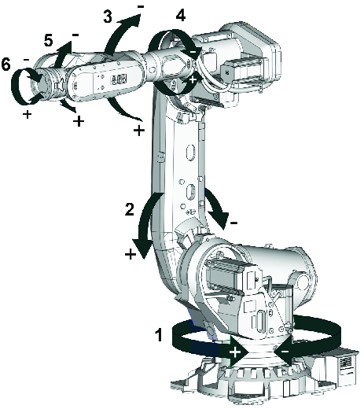
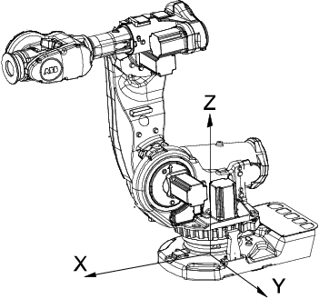
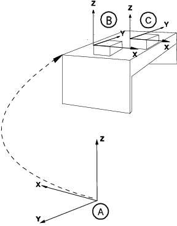
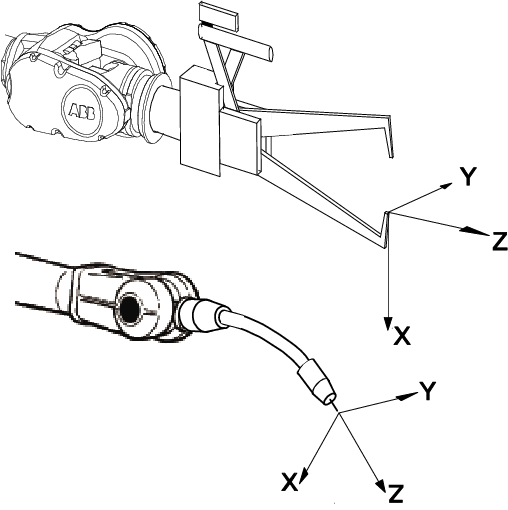

| 微动控制 | ||
| 微动控制的坐标系 | ||
| 坐标系 | 坐标系从一个称为原点的固定点通过轴定义平面或空间。机器人目标和位置通过沿坐标系轴的测量来定位. 机器人使用若干坐标系，每一坐标系都适用于特定类型的微动控制或编程。
| ||||||
| 默认设置 | 如果更改微动控制属性中的坐标，在重新启动之后它会自动重置为默认设置。 线性模式 在每个机械单元中，系统将对线性动作模式默认使用基坐标系。 重定向模式 在每个机械单元中，系统将对重定向动作模式默认使用工具坐标系。 | ||||||
| 轴和控制杆方向图示 | 普通的六轴操纵器的轴可使用控制杆手动微动控制。 请参阅工厂或车间的说明文档确定任何附加轴物理方向。 该图显示每个操纵器轴的移动模式.  | ||||||
| 基坐标系 |  基坐标系在机器人基座中有相应的零点，这使固定安装的机器人的移动具有可预测性。因此它对于将机器人从一个位置移动到另一个位置很有帮助。对机器人编程来说，其它如工件坐标系等坐标系通常是最佳选择。详情请参阅工件坐标系。 在正常配置的机器人系统中，当您站在机器人的前方并在基坐标系中微动控制，将控制杆拉向自己一方时，机器人将沿 X 轴移动；向两侧移动控制杆时，机器人将沿 Y 轴移动。扭动控制杆，机器人将沿 Z 轴移动. | ||||||
| 工件坐标系 | 
工件坐标系对应工件：它定义工件相对于大地坐标系（或其它坐标系）的位置. 工件坐标系必须定义于两个框架：用户框架（与大地基座相关）和工件框架（与用户框架相关）. 机器人可以拥有若干工件坐标系，或者表示不同工件，或者表示同一工件在不同位置的若干副本. 您对机器人进行编程时就是在工件坐标系中创建目标和路径。这带来很多优点：:
使用实例 例如，您打算确定一系列孔的位置，以便沿着工件边缘钻孔。 您打算在工件箱的两面隔板之间焊接。 | ||||||
| 工具坐标系 |  工具坐标系将工具中心点设为零位。 它会由此定义工具的位置和方向。 工具坐标系经常被缩写为 TCPF (Tool Center Point Frame)，而工具坐标系中心缩写为 TCP (Tool Center Point). 执行程序时，机器人就是将 TCP 移至编程位置。这意味着，如果您要更改工具（以及工具坐标系），机器人的移动将随之更改，以便新的 TCP 到达目标. 所有机器人在手腕处都有一个预定义工具坐标系，该坐标系被称为tool0。 这样就能将一个或多个新工具坐标系定义为tool0的偏移值. 微动控制机器人时，如果您不想在移动时改变工具方向（例如移动锯条时不使其弯曲），工具坐标系就显得非常有用. 使用实例 使用工具坐标系对穿、钻、铣、锯等操作进行编程和调整。 | ||||||
| 大地坐标系 |
大地坐标系在工作单元或工作站中的固定位置有其相应的零点。这有助于处理若干个机器人或由外轴移动的机器人. 在默认情况下，大地坐标系与基坐标系是一致的. 使用实例 例如，您有两个机器人，一个安装于地面，一个倒置。倒置机器人的基坐标系也将上下颠倒。 如果您在倒置机器人的基坐标系中进行微动控制，则很难预测移动情况。此时可选择共享大地坐标系取而代之。 |